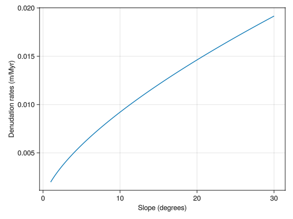

Physical erosion and sediment redistribution
This method not only considers the amount of materials that have been removed, but also how the eroded materials are being distributed to the neighboring regions depending on slopes on each direction.
Physical erosion
The equations used to estimate how much material could one cell provide to the lower cells is described underneath. The equation is found in [14]. We choose this equation mainly because it specifically deals with bedrock substrates instead of loose sediments. In the equation, $k_v$ is erodibility, and the default value is 0.0023 according to the paper. $(1 - I_f)$ indicates run-off generated in one cell and slope is the slope calculated based on ArcGis: how slope works. Note that the algorithms to calculate slope does not work on depressions.
\[D_{phys} = -k_v * (1 - I_f)^{1/3} |\nabla h|^{2/3}\]
This equation for the physical dedundation rate, $D_{phys}$ is implemented in code as follows:
function physical_erosion(slope::Float64, inf::Float64, erodibility::Any)
-1 * -erodibility .* (1 - inf) .^ (1 / 3) .* slope .^ (2 / 3)
endand the output of this function for a range of slope angles is plotted here:

Plotting code
#| requires: examples/denudation/physical-test.jl
#| creates: docs/src/_fig/PhysicalSlope.png
#| collect: figures
module PhysicalSpec
using GLMakie
using CarboKitten.Denudation.EmpiricalDenudationMod: slope_kernel
using CarboKitten.Denudation.PhysicalErosionMod: physical_erosion, redistribution_kernel
using CarboKitten.Stencil: Boundary, Periodic, offset_value, offset_index, stencil
using CarboKitten.BoundaryTrait
import CarboKitten.Config: Box
SLOPE = collect(1:0.2:30)
const inf = 0.5
const erodibility = 0.0025
DEN_MASS = Vector{Float64}(undef,size(SLOPE))
for i in eachindex(SLOPE)
DEN_MASS[i] = physical_erosion(SLOPE[i],inf,erodibility)
end
w = 10 .* [ 0.0663001 0.115606 0.646196
0.601523 0.130196 0.390821
0.864734 0.902935 0.670354]
fig = Figure()
ax = Axis(fig[1,1],xlabel="Slope (degrees)", ylabel="Denudation rates (m/Myr)")
lines!(ax,SLOPE,DEN_MASS)
save("docs/src/_fig/PhysicalSlope.png",fig)
endRedistribution of sediments
The redistribution of sediments after physical erosion is based on [15]: the eroded sediments calculated from the above equation are distributed to the neighboring 8 cells according to the slopes (defined as elevation differences/horizontal differences) towards each direction. The amount of sediments of one cell received is calculated by following steps:
Current implementation
module PhysicalErosionMod
import ..Abstract: DenudationType, denudation, redistribution
using ...Stencil: Boundary, Periodic, offset_value, offset_index, stencil
using ...BoundaryTrait
using ...Boxes: Box
using Unitful
@kwdef struct PhysicalErosion <: DenudationType end
const Amount = typeof(1.0u"m")
<<physical-erosion>>
function redistribution_kernel(w::Array{Float64}, cellsize::Float64)
s = zeros(Float64, (3, 3))
s[1, 1] = (w[1, 1] - w[2, 2]) / cellsize
s[1, 2] = (w[1, 2] - w[2, 2]) / cellsize / sqrt(2)
s[1, 3] = (w[1, 3] - w[2, 2]) / cellsize
s[2, 1] = (w[2, 1] - w[2, 2]) / cellsize / sqrt(2)
s[2, 2] = (w[2, 2] - w[2, 2]) / cellsize
s[2, 3] = (w[2, 3] - w[2, 2]) / cellsize / sqrt(2)
s[3, 1] = (w[3, 1] - w[2, 2]) / cellsize
s[3, 2] = (w[3, 2] - w[2, 2]) / cellsize / sqrt(2)
s[3, 3] = (w[3, 3] - w[2, 2]) / cellsize
s[s.<0.0] .= 0.0
sumslope = sum(s)
if sumslope == 0.0
return zeros(Float64, (3, 3))
else
return s ./ sumslope
end
end
function mass_erosion(box::Box{BT}, denudation_mass, water_depth::Array{Float64}, i::CartesianIndex) where {BT<:Boundary{2}}
wd = zeros(Float64, 3, 3)
for (k, Δi) in enumerate(CartesianIndices((-1:1, -1:1)))
wd[k] = offset_value(BT, water_depth, i, Δi)
end
cell_size = box.phys_scale ./ u"m"
return (redistribution_kernel(wd, cell_size) .* denudation_mass[i])
end
function total_mass_redistribution(box::Box{BT}, denudation_mass, water_depth, mass) where {BT<:Boundary{2}}
for i in CartesianIndices(mass)
redis = mass_erosion(box, denudation_mass, water_depth, i)
for subidx in CartesianIndices((-1:1, -1:1))
target = offset_index(BT, size(water_depth), i, subidx)
if target === nothing
continue
end
mass[target] += redis[2+subidx[1], 2+subidx[2]]
end
end
return mass
end
function total_mass_redistribution(box::Box{BT}, denudation_mass, water_depth) where {BT<:Boundary{2}}
mass = zeros(Amount, length(denudation_mass[:,1,1]), box.grid_size...)
@views for f in 1:length(denudation_mass[:,1,1])
total_mass_redistribution(box, denudation_mass[f,:,:], water_depth, mass[f,:,:])
end
return mass
end
function denudation(::Box, p::PhysicalErosion, water_depth::Any, slope, facies, state)
denudation_rate = zeros(typeof(1.0u"m/Myr"), length(facies), size(slope)...)
for idx in CartesianIndices(state.ca)
f = state.ca[idx]
if f == 0
continue
end
if water_depth[idx] <= 0
denudation_rate[f, idx[1], idx[2]] = physical_erosion.(slope[idx], facies[f].infiltration_coefficient, facies[f].erodibility)
end
end
return denudation_rate
end
function redistribution(box::Box{BT}, p::PhysicalErosion, denudation_mass, water_depth) where {BT<:Boundary}
return total_mass_redistribution(box, denudation_mass, water_depth)
end
end